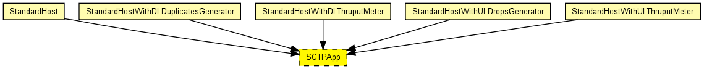
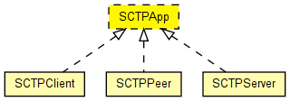

(no description)
The following diagram shows usage relationships between types. Unresolved types are missing from the diagram. Click here to see the full picture.
The following diagram shows inheritance relationships for this type. Unresolved types are missing from the diagram. Click here to see the full picture.
If a module type shows up more than once, that means it has been defined in more than one NED file.
| StandardHost (compound module) | |
| StandardHostWithDLDuplicatesGenerator (compound module) |
IP host with TCP, UDP, SCTP layers and applications AND PPPInterfaceWithDLDuplicatesGenerator. |
| StandardHostWithDLThruputMeter (compound module) |
IP host with TCP, UDP, SCTP layers and applications AND PPPInterfaceWithDLThruputMeter. |
| StandardHostWithULDropsGenerator (compound module) |
IP host with TCP, UDP, SCTP layers and applications AND PPPInterfaceWithULDropsGenerator. |
| StandardHostWithULThruputMeter (compound module) |
IP host with TCP, UDP, SCTP layers and applications AND PPPInterfaceWithULThruputMeter. |
| Name | Value | Description |
|---|---|---|
| display | i=block/app |
moduleinterface SCTPApp { parameters: @display("i=block/app"); gates: input sctpIn @labels(SCTPCommand/up); output sctpOut @labels(SCTPCommand/down); }